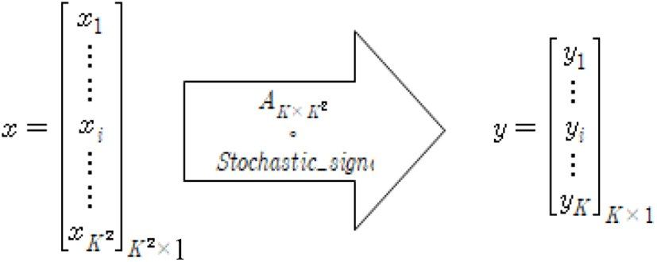

연구실적 · 국내전문학술지
압축센싱 기반 SAR 영상 복원 가속화를 위한 랜덤 하이브리드 첩-센싱 행렬 구현
Random Hybrid Chirp Sensing Matrix Implementation for Fast Compressive Sensing SAR Processing
 DOI
DOI PDF
PDF
초록
압축센싱 이론의 기반은 신호의 산재성과 센싱행렬의 비간섭성이다. 랜덤 센싱 행렬식은 구성이 쉽고 재구성에 높은 확률이 보장되지만, 많은 계산량과 메모리를 필요로 하며, 압축센싱 가능 조건을 산술적으로 구하는 과정이 복잡하다. 결정 센싱 행렬식은 이러한 문제점을 해결할 수 있는 구조로, 특히 첩 센싱 행렬의 경우 빠른 재구성 또한 가능하게 한다. 하지만 대부분의 결정 센싱 행렬식은 랜덤 행렬식에 비해 내부의 상호 간섭이 증가하여 독립성이 약해지고 결과적으로 압축 센싱 알고리즘의 성능이 저하되는 문제가 발생한다. 본 논문은 기존 랜덤 센싱 행렬의 우수한 산재 신호 복원성능과 결정 센싱 행렬식을 통한 신호처리 가속화 성능을 모두 획득 가능하게 하는 새로운 압축센싱 복원방법을 보여준다. 이를 통해 기존의 SAR 영상의 고질적 문제였던 방대한 데이터량 증가 문제를 해결하여 처리 속도 가속화에 기여하는 방법을 제안한다.
사이트 원문 표기
Hwi-jeong Jo, Hyung-Il Chun, In-Mo Ban, Woo-Kyung Lee, “압축센싱 기반 SAR 영상 복원 가속화를 위한 랜덤 하이브리드 첩-센싱 행렬 구현”, 한국전자파학회논문지, 제32권 12호, 2021년
BibTeX
@article{Jo_2021,
title={Random Hybrid Chirp Sensing Matrix Implementation for Fast Compressive Sensing SAR Processing},
volume={32},
ISSN={2288-226X},
url={http://dx.doi.org/10.5515/kjkiees.2021.32.12.1079},
DOI={10.5515/kjkiees.2021.32.12.1079},
number={12},
journal={The Journal of Korean Institute of Electromagnetic Engineering and Science},
publisher={Korean Institute of Electromagnetic Engineering and Science},
author={Jo, Hwi-jeong and Chun, Hyung-Il and Ban, In-Mo and Lee, Woo-Kyung},
year={2021},
month=Dec,
pages={1079–1090}
}